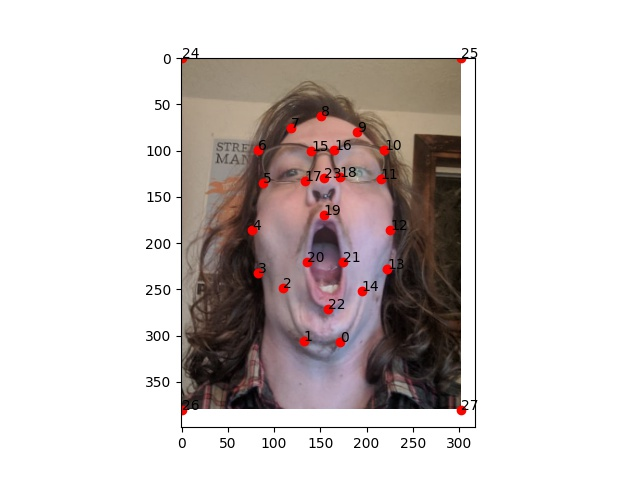

Please familiarize yourself with the average fan vs. average enjoyer meme,
which is readily available online at the time of writing.
In short, it elevates an action, object, hobby, or belief far over another by
associating that subject with the individual pictured by the corresponding photograph.
"Gigachad" image courtesy of photographer Krista Sudmalis & model Ernest Khalimov.
The subject of the "Average Fan" image is YouTuber James' YouNiverse.
Fun with Frequencies
Face morphing
This technique involves selecting an equivalent number of points on matching
features of the two input images (it is highly important that these points be
selected in the exact same order to ensure that the correct regions of the image
are aligned and morphed).
This set of points provides a method for us to generate several matching triangles
on the images. For example, if you take the triangle generated by connecting
vertices 0, 1, and 2 (or any other set of 3 points) on the input image and
compare them to the triangle formed by connecting the vertices of the same numbers
on the transformation image, you'll notice that the two shapes aren't exactly
congruent, but they contain the same "content." In the case of a face, this might
encase a nose, an eye, or the background. Once the corresponding points have been
defined, morphing the image becomes a process of transforming the corresponding
points inside the triangle of the input image to more & more closely match the
shape of the output image. Then, if you're doing a morph video, you can substitute
in a mix of the pixels of the input image and transformation image such that the
middle of the morph sequence becomes the perfect "in-between" image - a
combination of both the color and shape features of both images.
> 99.9% Nick
>
Nick's looking a little different
>
Giganick
>
Chad
>
> 99.9% Gigachad
> Nick with input points
&
Gigachad with input points
Brandon
>
(thanks for posing for this!)
>
Average Frandon
>
Above-average Fan
>
Average Fan

> Brandon with input points
&
the Average Fan with input points
See the full transformations here:
The Mean Face of a population
Next, I downloaded the FEI annotated faces database and got to work. This database
contains 200 unique faces, each with 2 expressions. Each of these 400 total images
contains 46 total "annotations," or systematically mapped points. That is to say,
point 0 and 1 always lie on the left and right nostrils, and the rest of the points
similarly lie on other specifically pre-defined locations and features of the face.
For each of the 46 points in each annotated face in the dataset, I found the average
position of each. That is, I found the average position of all left nostrils, all
right nostrils, noses, eyebrows, chins - you name it. Once I had the average feature
locations, I put them together into a final "average face" set of points. Here's what
that looks like.
Population mean face.
With this set up, I mapped the same 46 points onto my face.
&
&
Population mean stretched to my face
&
My face stretched to the population mean
These last two results are quite jarring, aren't they? That's because of two reasons:
first, it's that my facial features are more vertically spread than average (just look
at my long nose!); second, it's because my alignment isn't standardized to the other
photos, and I opted to have my hair and blank wall space in the photo. Thus, we're
stretching a lot of pixels around the edges to get these faces to morph into each other.
Now, here are some samples of images from the collection, then stretched to the mean face.